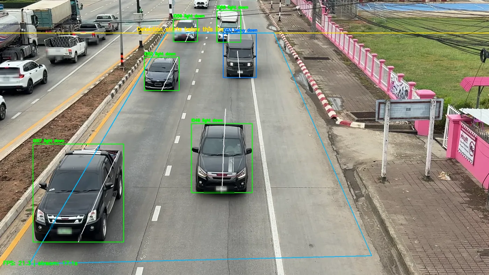

Senior project · ongoing · Jan 2026 – present
Real-Time Smart Road Accident Risk Warning
A roadside prototype that watches traffic video and estimates which kind of accident is most likely on that stretch of road right now.

The brief
Most road-safety systems either count traffic or detect a crash after it happens. We wanted to sit in between: given what a fixed roadside camera can see at this moment, which category of accident is the most likely one here?
That framing matters because the answer is actionable in different ways. A road with heavy-vehicle queues is a rear-end problem. A road with someone walking across it is a pedestrian problem. The warning a traffic officer or a driver needs is different in each case.
We settled on five risk classes: run-off-road, rear-end, head-on, side-impact (including intersection) and pedestrian.
This is a fixed roadside monitoring prototype, not a vehicle-mounted driver-assistance system, and not a crash detector. It estimates risk type, not the probability that a crash will occur.
How the system fits together
The pipeline is deliberately simple. Detection produces objects, the geometry filters decide which objects count, the counts become a feature vector, and the model turns that vector into a risk class with a confidence. Everything downstream of detection is cheap, which is what makes it run continuously.
Roadside video
Fixed-camera traffic footage, processed frame by frame.
YOLO11 detection
Cars, motorcycles, buses, trucks and people. ByteTrack adds persistent IDs and movement history.
Region & rider filters
Drop anything outside the road polygon or above the detection line; separate riders from pedestrians.
Feature vector
Vehicle counts by class, pedestrian presence, cyclical hour, weekend flag, weather, road type, province.
LightGBM pipeline
The exported model returns one of five risk classes with a confidence score.
Warning & log
Confidence bands drive the on-screen warning; every event is appended to a CSV log.
Stages 03 to 06 are the parts I spent the most time on. Stage 02 is largely configuration.
The data
The model is trained on historical Thai road accident records rather than on video. The cleaned set holds 139,924 records covering 2019–2025, reduced from 143,124 raw rows after removing duplicates, and split 111,939 / 27,985 for training and testing.
The class balance is the defining problem. Run-off-road accidents dominate the record; pedestrian accidents are rare, and the largest class holds roughly fifty times the records of the smallest. A classifier trained naively on that will learn to say "run-off-road" and be right most of the time while being useless for the classes that matter most.
So the evaluation metric had to be one that punishes ignoring small classes — macro-averaged recall, which weights every class equally regardless of how many examples it has — and the training had to try explicit resampling.
Features
The feature set is constrained by what a camera can actually supply in real time, which is a tighter list than what the accident records contain:
| Feature | Type | Source at inference |
|---|---|---|
| motorcycle_count | numeric | Detection, inside ROI |
| total_light_vehicles | numeric | Detection, inside ROI |
| total_heavy_vehicles | numeric | Detection, inside ROI |
| has_pedestrian | numeric | Detection, after rider filtering |
| hour_sin, hour_cos | numeric | Clock, encoded cyclically |
| is_weekend | numeric | Calendar |
| weather_group | categorical | Camera configuration |
| road_type_group | categorical | Camera configuration |
| province_clean | categorical | Camera configuration |
Encoding the hour as a sine and cosine pair rather than an integer was a small but necessary choice: 23:00 and 00:00 are adjacent in reality and twenty-three apart as integers.
Choosing a model
I trained a grid of classifiers against a grid of imbalance strategies and compared them on macro recall:
- Classifiers — LightGBM, CatBoost, random forest, logistic regression.
- Imbalance strategies — none, random oversampling, random undersampling, SMOTE.
LightGBM was selected and exported as a serialised pipeline, then loaded by the computer-vision application at startup. Gradient boosting on tabular features with mixed numeric and categorical columns is a well-matched choice here, and it is fast enough to call on every prediction interval without becoming the bottleneck.
I am deliberately not quoting a single accuracy figure for this project. My own project documents currently disagree about which evaluation run is the official result, and one summary slide reports a validation score in a place that reads like a test score. Until I have reconciled them I would rather describe the method than publish a number I cannot defend in an interview.
Making the detector behave
The model was the easy half. The hard half was that a detector pointed at a real road sees a great deal that is none of its business, and every one of those mistakes becomes a wrong feature value and then a wrong warning.
- The opposite carriageway. The camera sees both directions. Traffic on the far side was inflating vehicle counts for a road segment it had nothing to do with. I defined a road region of interest as a polygon and a detection line, and discarded every detection outside them — visible as the blue outline and yellow line in the frames above.
- Riders counted as pedestrians. YOLO correctly detects a motorcycle rider as a person. The feature vector then recorded a pedestrian on a road with no one walking on it, and
has_pedestrianis a strong signal, so the system confidently warned about pedestrians over empty tarmac. I added rider filtering that associates a person detection with the motorcycle underneath it, plus a separate pedestrian-presence validation step before the flag is set. - Flicker between frames. A single frame is a noisy sample. Introducing ByteTrack gave objects persistent identities and movement history, which made counts stable and opened up direction and trajectory work.
- Warning responsiveness. Predicting on every frame is wasteful and makes the overlay jitter; predicting too rarely makes it stale. I tuned the prediction-update interval between those two failures.
The theme across all four is the same: the cheapest reliable fix was to narrow what the system is allowed to look at, not to make the model larger.
Turning a prediction into a warning
A class label on its own is not useful to someone watching a monitor. The prototype maps the model's confidence onto three warning levels, each with plain-language text:
| Confidence | Level | Example message |
|---|---|---|
| below 0.55 | Normal | DRIVE SAFELY |
| 0.55 – 0.80 | Medium | SLOW DOWN |
| 0.80 and above | High | KEEP DISTANCE / PEDESTRIAN AHEAD |
Every prediction is also appended to a CSV event log with its timestamp, stream position, camera ID, risk type, confidence, warning level and the full feature vector that produced it. That log is what makes the prototype debuggable — when a warning looks wrong, the row tells you which counts caused it.
| Stream | Risk type | Conf. | Level | Motorcycles | Light | Heavy |
|---|---|---|---|---|---|---|
| 7.07 s | Rear-end | 0.5749 | Medium | 5 | 4 | 0 |
| 13.10 s | Pedestrian | 0.9432 | High | 1 | 1 | 0 |
| 17.10 s | Rear-end | 0.8271 | High | 0 | 5 | 1 |
| 21.10 s | Rear-end | 0.7955 | Medium | 0 | 3 | 0 |
What is actually verified
Being precise about this matters more than making it sound finished.
- Verified. The end-to-end path runs on recorded traffic footage: detection, filtering, feature extraction, model inference, on-screen warning and CSV logging all work together, with logged event rows and saved output frames as evidence.
- Not verified. The system has never run on a live public road. It has not been independently evaluated, and there is no measurement of whether it would change driver behaviour or prevent anything.
- Still open. Movement and trajectory analysis, a fuller monitoring interface, multiple camera configurations, richer context integration and a complete system evaluation are the final-semester work.
Who did what
Three students, with me as project manager. I did the majority of the hands-on work — dataset preparation, feature engineering, model training and selection, the computer-vision integration, the filtering logic and the troubleshooting. My teammates, Sai Zaw Linn and Min Maung Maung, contributed research, review, testing and presentation materials. Our advisor is Asst. Prof. Dr. Pattaramon Vuttipittayamongkol.
The code is not yet public. It carries trained model artifacts and coursework material belonging to other groups, so it needs separating before anything is published.